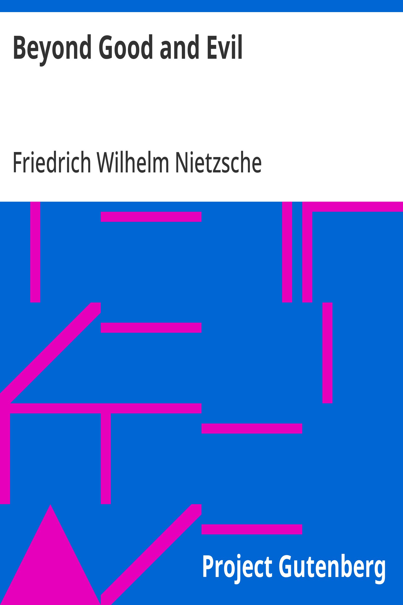

Beyond Good and Evil
ما وراء الخير والشر
الفلسفة
ملك عام
ترجمة كاملة
نيتشه في أوج نقده: تفكيك الحقيقة والأخلاق والميتافيزيقا في تسعة فصول حادة تختم بقيادة أوروبا نحو ما بعد القوميات. الفصل الأشهر في تاريخ الفلسفة عن أخلاق السادة وأخلاق العبيد، حيث تُولد «الشريرة» من انقلاب القيم — من الكتب المؤسِّسة للفكر الحديث، بترجمة كاملة عن ترجمة هيلين زيمرن.
| المؤلف | فريدريش نيتشه (ترجمة هيلين زيمرن) — Friedrich Nietzsche (trans. Helen Zimmern) |
| سنة النص الأصلي | ١٨٨٦ |
| كلمات المصدر (الإنجليزية) | ٦٢٦٥٠ |
| كلمات الترجمة (العربية) | ٦٠٨٦٨ |
| مقاطع الترجمة المدققة | ٣٧ |
| مدة القراءة التقريبية | ≈ ١٣٨٥ دقيقة |
الترخيص والحقوق: النص الأصلي (١٨٨٦) وترجمة زيمرن في الملك العام. هذه الترجمة العربية منشورة بإذن حر. المصدر: gutenberg.org/ebooks/4363